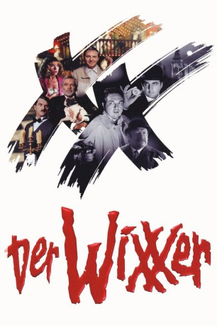

#5175 Der Wixxer
 
 IMDB-Wertung: 6.1 / 10
IMDB-Wertung: 6.1 / 10  Metascore: 0
Metascore: 0 
In die Wälder von Blackwhite Castle haben sich Doris und Dieter Dubinsky aus Ostdeutschland verirrt. Statt London müssen sie sich nun einen Mord ansehen, denn direkt vor ihren Augen wird der „Mönch mit der Peitsche“ überfahren. Chief Inspector Even Longer und sein neuer Kollege Very Long von Scotland Yard treffen bald darauf am Tatort ein und vermuten, dass hier der schon lange gesuchte Wixxer wieder zugeschlagen hat. Der hat nicht nur Even Longers Kollegen Rather Short auf dem Gewissen, sondern auch einige Gangster aus der Unterwelt, denn sein Ziel ist es, Herr derselben zu werden. Die Spur führt direkt nach Blackwhite Castle selbst, wo der Earl of Cockwood residiert.
Jahr: 2004
Dauer: 85 Minuten
FSK: 12
Land: Deutschland Studio: Falcom MediaTonspuren:
Untertitel:
Auflösung: 1080p (1920x816) Größe: 2908 MB
Genre: Komödie, Krimi, Mystery
Regisseur: Tobi Baumann
Drehbuch: Nai-Hoi Yau
Soundtrack:
Darsteller:
 Thomas Heinze als Rather Short / Der Wixxer neu
Thomas Heinze als Rather Short / Der Wixxer neu Anke Engelke als Doris Dubinsky
Anke Engelke als Doris Dubinsky Thomas Fritsch als Earl of Cockwood
Thomas Fritsch als Earl of Cockwood Antoine Monot Jr. als Der taube Jack
Antoine Monot Jr. als Der taube Jack- Daniel Steiner als Fritti
- André Dietz als Der blöde Bogenschütze
- Michal Gulyás als Der Arsch mit den Ohren
- Václav Krejcí als Räuber Hotzenplotz
- Hanus Bor als Dr. No
- Michael Habeck als Der Arsch mit den Ohren , uncredited
- Günther Jauch als Talkshow-Moderator , uncredited
 Oliver Kalkofe als Even Longer / Kreischende Frau
Oliver Kalkofe als Even Longer / Kreischende Frau Bastian Pastewka als Very Long / Rosenverkäufer
Bastian Pastewka als Very Long / Rosenverkäufer- Tanja Wenzel als Miss Pennymarket
- Olli Dittrich als Dieter Dubinsky
 Christoph Maria Herbst als Hatler
Christoph Maria Herbst als Hatler- Wolfgang Völz als Sir John
- Lars Rudolph als Smeerlap
- Eva Ebner als Miss Drycunt
- Oliver Welke als Dr. Brinkman
- André Meyer als Pommi
- Grit Boettcher als Miss Nora
- Klaus Neumann als Der dicke Hai
- Holger Speckhahn als Der Bucklige von Soho
- Die Wildecker Herzbuben als Die Bande des Schreckens
- Zdenek Tomes als Der, schwarze bunte Abt
- Carl Heinz Choynski als Der Hausmeister mit Cordhut
- Ivan Urbánek als Dr. Yes
- Ales Vrzal als Pantomime
- Catharina van Veen als Susan
- Sylvia Kube als Mandy
- Achim Mentzel als Der Wixxer alt
- Matthias Müsse als Sergeant Smegma
- Nina Sollich als Lackschlampe vor Fishy Fingers
- No Angels als
- Tobi Baumann als Der Wixxer , uncredited
- Dieter Bohlen als Himself , archive footage, uncredited
- Radek Bruna als Seemann , uncredited
- Jürgen Egger als Der Frosch mit der Maske / Der schöne Steve , uncredited
- Simon Happ als Der Frosch mit der Maske , uncredited
- Helmut Krauss als Edgar Wallace sein Nachbar , uncredited
- Daniel Küblböck als Himself , archive footage, uncredited
- Ingeborg Lapsien als Miss Drycunt , uncredited
- Carmen Nebel als Herself , archive footage, uncredited
- Barbara Ratthey als Alte Frau mit Gehhilfe , uncredited
- Steffen Scheumann als Larry , uncredited
- Andreas von der Meden als Der Frosch mit der Maske , uncredited
Datei: X:\2-Dilogie(N-Z)\Wixxer\Wixxer, Der (2004, FSK12, 1920x816).mkv seit 28.12.2016
Festplatte: HD Collection-2(A-Z)-3(A-M)
 Alle Filme aus Gruppe '2-Dilogie(N-Z)\Wixxer'
Alle Filme aus Gruppe '2-Dilogie(N-Z)\Wixxer'